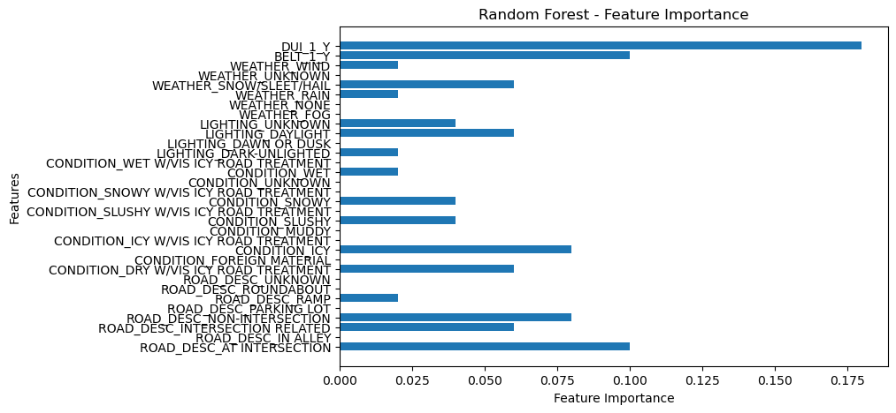

Analysis of Denver Crash Data Using Random Forest
I developed a predictive model for analyzing the severity of road crashes in Denver County using a comprehensive dataset from the Colorado Department of Transportation. This project involved data preprocessing, feature selection, and modeling with a Random Forest algorithm to predict crash severity based on factors like road conditions, lighting, weather, and more. By optimizing the model's hyperparameters and evaluating feature importance, I improved the model's accuracy, providing valuable insights into the key predictors of accident severity. Future work includes exploring additional features to further enhance the model's predictive power.
